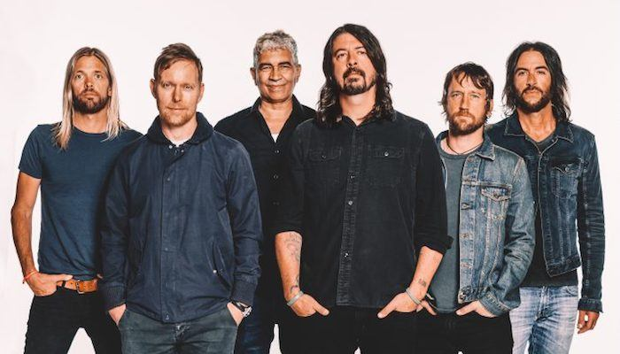

Foo Fighters is an American rock band, formed in Seattle, Washington, in 1994. It was founded by Nirvana drummer Dave Grohl as a one-man project following the dissolution of Nirvana after the suicide of Kurt Cobain. The group got its name from the UFOs and various aerial phenomena that were reported by Allied aircraft pilots in World War II, which were known collectively as "foo fighters".
Prior to the release of Foo Fighters' 1995 debut album Foo Fighters, which featured Grohl as the only official member, Grohl recruited bassist Nate Mendel and drummer William Goldsmith, both formerly of Sunny Day Real Estate, as well as Nirvana touring guitarist Pat Smear to complete the lineup. The band began with performances in Portland, Oregon. Goldsmith quit during the recording of the group's second album, The Colour and the Shape (1997), when most of the drum parts were re-recorded by Grohl himself. Smear's departure followed soon afterward, though he would appear as a guest with the band frequently starting in 2006, and would rejoin as an official full-time member in 2011.
Over the course of the band's career, four of its albums have won Grammy Awards for Best Rock Album.